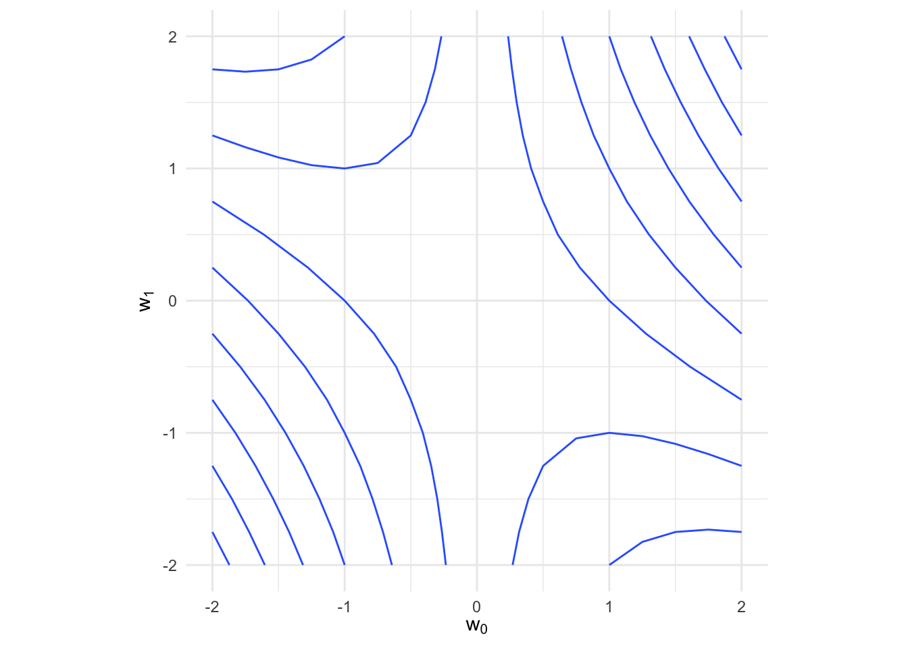

1 機械学習に必要な数学の基本
準備
まず，パッケージを読み込む．
内容
第1節
リスト 4-1-(1)
Numpyのインポートに対応するRのコードはない．{tidyverse}をインストールすれば良い．
リスト 4-1-(2)
np.array()に対応するRのコードにはarray()がある．array(要素, dim = c(行数, 列数))のように指定すると配列が作成される．
リスト 4-1-(3)
データ型を確認するにはclass()を用いたら良い．
リスト 4-1-(4)
リスト 4-1-(5)
リスト 4-1-(6)
転置にはt()を用いる．
リスト 4-1-(7)
リスト 4-1-(8)
リスト 4-1-(9)
リスト 4-1-(10)
[,1]
[1,] 10行列の積を計算するには%*%を用いる．
行列計算\(\mathbb{b} \cdot \mathbb{c}\)では，行列\(\mathbb{b}\)の列数と行列\(\mathbb{c}\)の行数が一致する必要がある．Pythonでは，行列の行数(または列数)を指定していなくとも計算が可能であるが，Rではそうはいかない．そのため行列b, cの行数(または列数)を計算可能な数値に指定しなければならない．
リスト 4-1-(11)
ノルムはnorm()で計算可能である．
第2節
リセット
環境のリセットはrm(list = ls())でできる．今回はすべてをリセットするためにall.names引数にTRUEを指定している．
リスト 4-2-(1)
# R
a <- array(rep(1, times = 1000), dim = c(1, 1000))
b <- array(1:1000, dim = c(1000, 1))
print(a %*% b) [,1]
[1,] 500500rep()関数は，特定の値を繰り返し出力したい時に便利である．rep(1, times = 1000)は1を1000個生成し，それをベクトルとして出力するコードである．
第3節
リスト 4-3-(1)
関数を定義 ———
関数を定義するにはfunction(){}を用いる．return()で値を返すことができる．
表示データの計算 ———
# Python
w0_min, w0_max = -2, 2
w1_min, w1_max = -2, 2
w0_n, w1_n = 17, 17
w0 = np.linspace(w0_min, w0_max, w0_n)
w1 = np.linspace(w1_min, w1_max, w1_n)
ww0, ww1 = np.meshgrid(w0, w1) # (D) グリッド座標の作成
f_num = f(ww0, ww1) # (E) fの値の計算
df_dw0_num = df_dw0(ww0, ww1) # fの偏微分の計算
df_dw1_num = df_dw1(ww0, ww1) # fの偏微分の計算# R
w0_min <- -2; w0_max <- 2
w1_min <- -2; w1_max <- 2
w0_n <- 17; w1_n <- 17
w0 <- seq(from = w0_min, to = w0_max, length.out = w0_n)
w1 <- seq(from = w1_min, to = w1_max, length.out = w1_n)
grid_w0w1 <- expand_grid(w0, w1) # (D) グリッド座標の作成
f_num <- f(grid_w0w1$w0, grid_w0w1$w1) # (E) fの値の計算
df_dw0_num <- df_dw0(grid_w0w1$w0, grid_w0w1$w1) # fの偏微分の計算
df_dw1_num <- df_dw1(grid_w0w1$w0, grid_w0w1$w1) # fの偏微分の計算Rで複数のコードを1行に書くには;で区切れば良い．
Pythonのnp.linspace()に対応するRのコードはseq()で，from引数, to引数で指定された値の範囲から，length.out引数で指定された個数の値をベクトルとして出力する関数である．上のコードでは，-2から2までの値の中から17個の値を出力している．
np.meshgrid(w0, w1)は，2次元平面でのすべての座標を出力するコードである．例えば，\((\) ww0[1, 1] \(,\) ww1[1, 1] \()\)は\((\mathrm{w}_0, \mathrm{w}_1) = (-2, -2)\)を，\((\) ww0[1, 2] \(,\) ww1[1, 2] \()\) は\((\mathrm{w}_0, \mathrm{w}_1) = (-1.75, -2)\)を表している．ww0とww1の対応する要素が各座標を表しているのである．
[,1] [,2] [,3] [,4]
[1,] -2 -1.75 -1.5 -1.25
[2,] -2 -1.75 -1.5 -1.25
[3,] -2 -1.75 -1.5 -1.25
[4,] -2 -1.75 -1.5 -1.25 [,1] [,2] [,3] [,4]
[1,] -2.00 -2.00 -2.00 -2.00
[2,] -1.75 -1.75 -1.75 -1.75
[3,] -1.50 -1.50 -1.50 -1.50
[4,] -1.25 -1.25 -1.25 -1.25Rで同じように格子状の座標を生成するにはexpand_grid()がある．与えられたベクトルのすべての組み合わせを生成し，それらを格納したデータフレームを返してくれる．
# A tibble: 9 × 2
x y
<dbl> <dbl>
1 1 4
2 1 5
3 1 6
4 2 4
5 2 5
6 2 6
7 3 4
8 3 5
9 3 6Pythonでは，座標をww0, ww1オブジェクトに\(17 \times 17\)配列として格納しているが，Rではexpand_grid()で作成したデータフレームをそのまま用いている．なぜなら，後にグラフ描画に用いる{ggplot2}には配列は適していないからである．
グラフ描画 ———
- 等高線表示
# Python
plt.figure(figsize=(9, 4))
plt.subplots_adjust(wspace=0.3)
plt.subplot(1, 2, 1)
cont = plt.contour( # (F) fの等高線表示
ww0, ww1, f_num, levels=10, colors="black")
cont.clabel(fmt="%d", fontsize=8)
plt.xticks(range(w0_min, w0_max + 1, 1))
plt.yticks(range(w1_min, w1_max + 1, 1))
plt.xlim(w0_min - 0.5, w0_max + 0.5)
plt.ylim(w1_min - 0.5, w1_max + 0.5)
plt.xlabel("$w_0$", fontsize=14)
plt.ylabel("$w_1$", fontsize=14)# R
df <- cbind(grid_w0w1, f_num, df_dw0_num, df_dw1_num)
df |>
ggplot(aes(w0, w1, z = f_num)) +
geom_contour() +
coord_fixed(ratio = 1) +
labs(x = expression(w[0]), y = expression(w[1])) +
theme_minimal()
グラフの描画には{ggplot2}を用いる．{ggplot2}でグラフを描画するときは，整然(tidy)なデータが必要であるため，それを作成するところから始めなければならない(整然データについては宋・矢内『私たちのR』第17章を参照されたい)．
空のデータフレームを作成して，それに値を順に入れるという方法で整然データを用意している．等高線表示にはggplot2::geom_contour()を用いる．引数にはx軸, y軸とそれらに対応するz軸の値が必要である．
- ベクトル表示
# Python
plt.subplot(1, 2, 2)
plt.quiver( # (G) fの勾配のベクトル表示
ww0, ww1, df_dw0_num, df_dw1_num)
plt.xlabel("$w_0$", fontsize=14)
plt.ylabel("$w_1$", fontsize=14)
plt.xticks(range(w0_min, w0_max + 1, 1))
plt.yticks(range(w1_min, w1_max + 1, 1))
plt.xlim(w0_min - 0.5, w0_max + 0.5)
plt.ylim(w1_min - 0.5, w1_max + 0.5)
plt.show()# R
df |>
ggplot() +
geom_segment(aes(x = w0, xend = w0 + df_dw0_num / 30,
y = w1, yend = w1 + df_dw1_num / 30),
linewidth = 0.3,
arrow = arrow(length = unit(0.1, 'cm'))) +
coord_fixed(ratio = 1) +
labs(x = expression(w[0]), y = expression(w[1])) +
theme_minimal()
ベクトル表示にはggplot2::geom_segment()を用いる．引数にx軸, y軸の始まりであるx, yと，終わりであるxend, yendを指定する．そうすると始まりと終わりを繋ぐベクトルが表示される．xend, yendには，\((\mathrm{w}_0, \mathrm{w}_1)\)からそれぞれの軸に対して偏微分した値を足した数値を指定している．
第4節
リセット
リスト 4-4-(1)
リスト 4-4-(2)
リスト 4-4-(3)
リスト 4-4-(4)
リスト 4-4-(5)
リスト 4-4-(6)
行列計算の都合上，\(\mathbb{A}\)は\(1 \times 3\)行列，\(\mathbb{B}\)は\(3 \times 1\)行列としている．行列の内積は%*%で計算可能である．
リスト 4-4-(7)
[,1] [,2] [,3]
[1,] 4 10 18各要素同士の積は*で計算できる．この場合，それぞれの行列の行数と列数は一致しなければならないことに注意する．
リスト 4-4-(8)
リスト 4-4-(9)
リスト 4-4-(10)
単位行列はdiag()で作成できる．
リスト 4-4-(11)
リスト 4-4-(12)
[,1] [,2]
[1,] -2.0 1.0
[2,] 1.5 -0.5逆行列はsolve()を用いる．
リスト 4-4-(13)
[,1] [,2] [,3]
[1,] 1 2 3
[2,] 4 5 6 [,1] [,2]
[1,] 1 4
[2,] 2 5
[3,] 3 6転置にはt()を用いる．
第5節
リセット
リスト 4-5-(1)
表示データの計算 ———
グラフ描画 ———
# R
tibble(x_plt = c(x, x, x),
y_plt = c(y, y2, y3),
col = rep(c('1', '2', '3'), each = length(x))) |>
ggplot(aes(x = x_plt, y = y_plt, color = col)) +
geom_line() +
xlim(-4, 4) + ylim(-2, 6) +
coord_fixed(ratio = 8 / 8) +
scale_color_manual(values = c('black', 'cornflowerblue', 'gray'),
name = element_blank(),
labels = c(expression(y == 2 ^ x),
expression(y == 3 ^ x),
expression(y == 0.5 ^ x))) +
labs(x = element_blank(), y = element_blank()) +
theme_minimal()
リスト 4-5-(2)
表示データの計算 ———
グラフ描画 ———
# R
ggplot() +
geom_line(data = tibble(x_plt = x, y_plt = y), # 指数関数
mapping = aes(x = x_plt, y = y_plt),
color = 'black') +
geom_line(data = tibble(x_plt = x2, y_plt = y2), # 対数関数
mapping = aes(x = x_plt, y = y_plt),
color = 'cornflowerblue') +
geom_line(data = tibble(x_plt = x, y_plt = x), # y = x
mapping = aes(x = x_plt, y = y_plt),
linetype = 'dashed') +
xlim(-8, 8) + ylim(-8, 8) +
coord_fixed(ratio = 1) +
labs(x = element_blank(), y = element_blank()) +
theme_minimal()
リスト 4-5-(3)
表示データの計算 ———
グラフ描画 ———
# R
ggplot() +
geom_line(data = tibble(x_plt = x, y_plt = y), # 指数関数
mapping = aes(x = x_plt, y = y_plt),
color = 'black') +
geom_line(data = tibble(x_plt = x, y_plt = logy), # 対数化
mapping = aes(x = x_plt, y = y_plt),
color = 'cornflowerblue') +
xlim(-4, 4) + ylim(-4, 8) +
coord_fixed(ratio = 8 / 12) +
labs(x = element_blank(), y = element_blank()) +
theme_minimal()リスト 4-5-(4)
表示データの計算 ———
グラフ描画 ———
# R
ggplot() +
geom_line(data = tibble(x_plt = x, y_plt = y), # y
mapping = aes(x = x_plt, y = y_plt),
color = 'gray',
linetype = 'dashed') +
geom_line(data = tibble(x_plt = x, y_plt = dy), # y'
mapping = aes(x = x_plt, y = y_plt)) +
xlim(-4, 4) + ylim(-1, 8) +
coord_fixed(ratio = 8 / 9) +
labs(x = element_blank(), y = element_blank()) +
theme_minimal()
リスト 4-5-(5)
表示データの計算 ———
グラフ描画 ———
# R
ggplot() +
geom_line(data = tibble(x_plt = x, y_plt = y), # y
mapping = aes(x = x_plt, y = y_plt),
color = 'gray',
linetype = 'dashed') +
geom_line(data = tibble(x_plt = x, y_plt = dy), # y'
mapping = aes(x = x_plt, y = y_plt)) +
xlim(-1, 4) + ylim(-8, 8) +
coord_fixed(ratio = 5 / 16) +
labs(x = element_blank(), y = element_blank()) +
theme_minimal()リスト 4-5-(6)
表示データの計算 ———
グラフ描画 ———

リスト 4-5-(7)
ソフトマックス関数 ———
テスト ———
リスト 4-5-(8)
表示データの計算 ———
Pythonでは，yは行数x0_n, 列数x1_nの行列となるが，Rではそうはならない．各値の計算結果がベクトルとなって出力されてしまう．
このベクトルは，(y0[1], y0[2], y0[3], ..., y0[400], y1[1], y1[2], ...)のような並びとなっているので，\(400 \times 3\)の行列に変換しなければならない．1列目に400個のy0，2列目に400個のy1，3列目に400個のy2が並ぶ行列としている．
グラフ描画 ———
# Python
plt.figure(figsize=(8, 3))
for i in range(2):
ax = plt.subplot(1, 2, i + 1, projection="3d")
ax.plot_surface(
xx0, xx1, y[i],
rstride=1, cstride=1, alpha=0.3,
color="blue", edgecolor="black",
)
ax.set_xlabel("$x_0$", fontsize=14)
ax.set_ylabel("$x_1$", fontsize=14)
ax.view_init(40, -125)
plt.show()# R
persp(x = x0, y = x1,
z = y[,1] |>
matrix(nrow = x0_n, ncol = x1_n, byrow = TRUE),
zlab = '', theta = -40, phi = 30)
persp(x = x0, y = x1,
z = y[,2] |>
matrix(nrow = x0_n, ncol = x1_n, byrow = TRUE),
zlab = '', theta = -40, phi = 30)3Dプロットにはgraphics::persp()関数を用いた．x, y引数にはx0, x1を，z引数には2つの値に対応した行列を指定しなければ描画されない点に注意．
リスト 4-5-(9)
ガウス関数 ———
コードの関係上，x引数を追加している．
グラフ描画 ———
# R
x <- seq(from = -4, to = 4, length.out = 100)
ggplot() +
geom_line(data = tibble(a = x, b = gauss(0, 1, 1, x)), # 平均0，標準偏差1，高さ1
mapping = aes(x = a, y = b),
color = 'black') +
geom_line(data = tibble(c = x, d = gauss(2, 2, 0.5, x)), # 平均2，標準偏差2，高さ0.5
mapping = aes(x = c, y = d),
color = 'gray') +
xlim(-4, 4) + ylim(-0.5, 1.5) +
coord_fixed(ratio = 8 / 2) +
labs(x = element_blank(), y = element_blank()) +
theme_minimal()第6節
リセット
リスト 4-6-(1)
ガウス関数 ———
リスト 4-6-(2)
リスト 4-6-(3)
パラメータ ———
データ生成 ———
# R
x0_n <- 40; x1_n <- 40
x0 <- seq(from = x0_min, to = x0_max, length.out = x0_n)
x1 <- seq(from = x1_min, to = x1_max, length.out = x1_n)
f <- array(0, dim = c(x1_n, x0_n))
for (i0 in 1:x0_n) {
for (i1 in 1:x1_n) {
f[i0, i1] <- gauss(x0[i0], x1[i1], mu, sigma)
}
}
grid_x0x1 <- expand_grid(x0, x1)グラフ描画 ———
- 等高線表示
# R
df <- grid_x0x1 |>
mutate(f = rep(NA, times = n()))
n <- 1
for (i in 1:x0_n) {
for (j in 1:x1_n) {
df$f[n] <- f[i, j]
n <- n + 1
}
}
df |>
ggplot(aes(x0, x1, z = f)) +
geom_contour() +
xlim(-2, 3) + ylim(-2, 3) +
coord_fixed(ratio = 5 / 5) +
labs(x = expression(x[0]), y = expression(x[1])) +
theme_minimal()- サーフェス表示